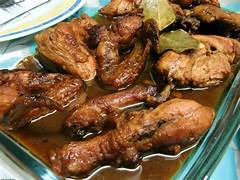

LECHON
A staple at celebrations and gatherings, lechon is a whole roasted pig with crispy, golden-brown skin and tender, succulent meat. It's often served with a liver-based sauce called lechon sauce and is a must-try for anyone visiting the Philippines.Lechon holds a special place in the hearts and palates of Filipinos, often hailed as the king of Filipino cuisine. This iconic dish, characterized by its crispy skin and succulent meat, is more than just food—it's a centerpiece of celebrations, a symbol of festivity, and a testament to the culinary mastery of Filipino cooks.
Lechon is more than just a dish; it's a cultural institution, a symbol of Filipino hospitality, and a culinary masterpiece that continues to captivate and inspire. Whether enjoyed at a bustling fiesta or savored in the comfort of home, lechon embodies the spirit of celebration and the joy of communal dining—a testament to the enduring legacy of Filipino cuisine.
ADOBO
Adobo is more than just a meal; it's a cultural touchstone that brings people together and celebrates the richness of Filipino cuisine. Whether enjoyed at a family dinner, a casual gathering with friends, or a festive feast, adobo holds a special place on the table and in the hearts of those who partake in it. Its comforting flavors and familiar aroma evoke feelings of nostalgia and warmth, making it a true comfort food for Filipinos everywhere.


Adobo is more than just a dish; it's a cultural symbol that reflects the resilience, resourcefulness, and creativity of the Filipino people. Its enduring popularity and universal appeal serve as a testament to the timeless allure of Filipino cuisine and its ability to bring people together, one delicious bite at a time.